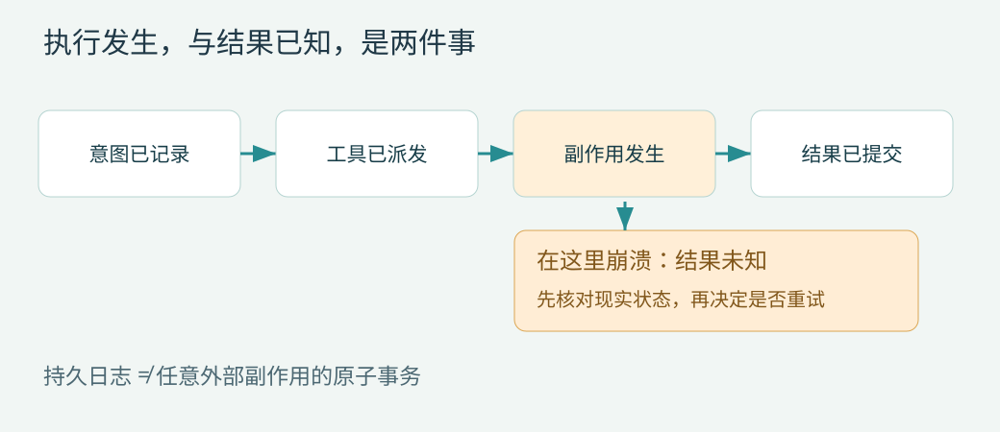

第 17 章 故障恢复：未知结果、幂等与重放政策
最关键的窗口在副作用之后
工具已写文件或提交远程任务，成功结果还没进入存储，进程退出。恢复看到 dispatched，却没有结果。真实动作可能发生，也可能没发生。这个状态必须叫 unknown，不能把缺少本地结果解释为“未执行”。

按状态决定恢复，而非一律重跑
| 调用状态 | 确定知道的事实 | 恢复动作 |
|---|---|---|
| intended | 意图被接纳，尚无派发记录 | 重新校验并按当前授权决定 |
| awaiting approval | 等待特定决策 | 恢复同一请求，过期则重建 |
| dispatched，无结果 | 外部效果不明 | 按 replay/reconcile 策略处理 |
| settled | 结果已提交 | 复用记录，不重复执行 |
| unknown | 已确认不能自动判断 | 查询后置状态或要求明确处理 |
恢复整个 step 时，先补齐它已接纳的调用，不先请求模型生成一套新的调用。否则相同业务动作可能换一个 id 再次执行，绕开了调用级去重。
三类重放政策
safe 表示可在定义的输入和环境条件下重跑，例如受限快照读取；reconcile 表示先查询外部状态，例如按幂等键查询远程构建；never 表示结果不明时停止自动执行，例如没有幂等支持的一次发送。
“只读”也不自动 safe：请求可能计费、外部数据可能变化、查询可能消耗限额。safe 的含义应包括允许的重复成本和是否接受新结果。Pi Durable 对工具显式 replay 声明，以及不安全调用中断后返回 interrupted，提供了直接参考。P12
幂等键要被真实执行系统识别
本地 call_id 只关联日志。外部服务必须接收并记住幂等键，才能把重试关联到原动作。建议将 tenant、业务操作、稳定调用身份与输入摘要组合，服务对相同键不同输入返回冲突。
幂等键过期后再次重试也可能重复，因此记录服务去重窗口与恢复期限。不要在每次 retry 时生成新键。重试 attempt 可以变化，逻辑 operation key 保持不变。
文件修改如何核对后置条件
精确替换可以保存 old_hash 与 intended_new_hash。恢复后若当前等于 new_hash，说明目标内容符合预期，可记录核对结果；若等于 old_hash，只能说明当前看起来未修改，是否重新执行还需按权限和任务状态判断；其他情况是冲突。
即使匹配 new_hash，也不一定能证明只有本工具写过，但对于“达到这份目标内容”的教学任务，它可以满足后置条件。涉及计费、发送和版本增长时，这种内容相等不足以证明业务操作完成。
重放不能忽略结果有效期
已提交测试结果只对当时的代码与环境有效。恢复后代码变了，应触发新的验证，而不是因为 call 已 settled 就永远跳过。将执行幂等与证据新鲜度分开：旧调用不重复，新的输入版本需要新调用。
参考内核在完成前核对 fixture 验证结果绑定的当前实现哈希，但并不提供通用工作树依赖追踪。生产方案需要 read set、依赖版本或整个构建输入摘要。
恢复要有所有者与熔断
多个 worker 同时发现未完成任务时，只有持有 lease 的恢复者可以推进；外部执行还需要 fencing，防止旧 worker 恢复联网后继续写。反复在同一检查点崩溃的任务，应停放并提供诊断，不无限自动启动。Pi Durable 的重启限制给出了这种故障控制思路。P12
取消与崩溃也不同。用户取消不应被重启程序解释为“继续替用户完成”。持久记录取消意图和清理状态，恢复只处理必要收敛，不自动开启新工作。
参考程序的行为
参考内核遇到未结算的非 replay-safe 编辑，直接抛 OutcomeUnknown，停止循环；它不会让模型用新 id 再改一次。较小 labs 提供显式 reconcile 命令，展示后置内容核对。两个程序验证不同层级的恢复，不把教学内核包装成任意外部事务引擎。
验收应记录真实副作用次数。只比较最终回答是否相同，发现不了重复发送或重复构建。对每个派发和提交边界注入故障，分别检查框架事实与外部事实。